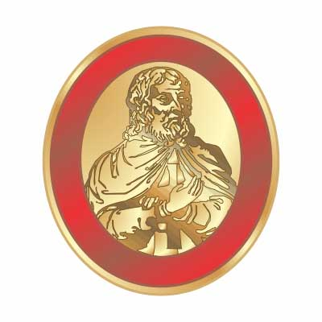

Membros Regulares 2020
DeMolays Ativos


Conselho Consultivo
| # | Cargo | ID DM | Nome Completo | Data de Nascimento | Grau |
|---|---|---|---|---|---|
| 1 | Presidente | 73409 | Júlio Cesar Nunes da Silva | 16/09/1986 | |
| 2 | Consultor | --- | Jurandi Fernandes da Silva | 07/11/1964 | |
| 3 | Conselheiro | 38775 | Kildare Ronnie Andrade de Oliveira | 18/07/2002 | 
|
| 4 | Conselheiro | --- | Isaac Santos do Nascimento | 30/06/1992 | |
| 5 | Conselheiro | 1809 | Marcus Vinicius Freire Pontes | 18/07/2002 |  |
| 6 | Conselheiro | 77402 | Jose Maxuell Vieira Lopes da Silva | 18/07/2002 | |
| 7 | Conselheiro | 27144 | Kevin Pontes Ribeiro Felipe | 18/07/2002 |